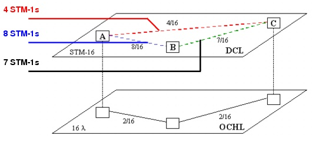
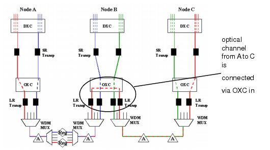

Grooming DCL to OCH Traffic > DCL Grooming Solutions Without Protection > Solution 1: Pure End-to-End (No Intermediate Grooming)
Solution 1: Pure End-to-End (No Intermediate Grooming)
This solution specifies end-to-end grooming (also called "edge grooming"); this grooms all DCL traffic at the edge of the network and not in any intermediate nodes. The following network contains three nodes, in which a single fiber carrying 16 wavelengths is lit on links between A-B and B-C. There is a total DCL traffic demand of 19 STM-1 units; each optical channel carries an STM-16 signal.
Figure 8-5 End-to-End (No Protection): Capacity Requirements

This example uses the following strategy: For each DCL connection, reserve one optical channel in the OCH layer. This channel can use multiple wavelengths; the level of utilization on the channel depends on the number of time slots requested. For example, one time slot (STM-1) can result in an optical channel (STM-16) that is poorly used (1 out of 16). SP Guru Transport Planner accommodates these channels in the OCH layer. In this example, A-C and B-C result in two single-hop optical channels and A-C is routed over two hops.
The associated equipment in the DCL and OCH layers is shown in Figure 8-6-End-to-End (No Protection): Associated Equipment . All traffic is aggregated in wavelengths by the DXC. There are two OA sites on both links and one regeneration site on link A-B. The optical channel A-C is connected through the OXC in node B.
Figure 8-6 End-to-End (No Protection): Associated Equipment

Note—The values in Table 8-7 are calculated assuming that the OCH layer mode is opaque.
| Home © 1987-2007 OPNET Technologies, Inc. All Rights Reserved. This software may be covered by one or more U.S. Patents. See complete patent notice in the Legal Notices section. OPNET Support Center |